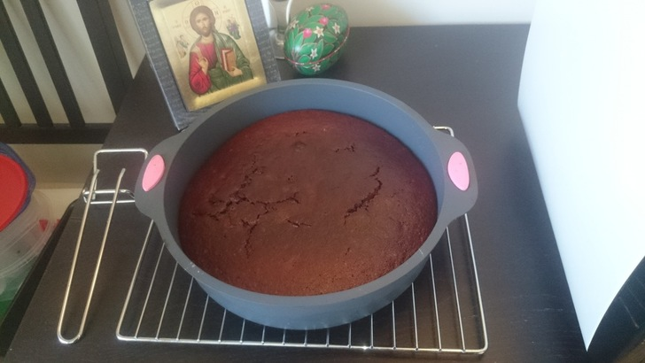

Готовлю себе раз в две недели. Реже не получается - настроение портится, если долго ее не ем.
- сахар 1 стакан
- растительное масло ¼ стакана
- вода 1 стакан
- мед 2 ст.л.
- прогреть, пока мед и сахар не растворятся
- остудить до 40 градусов
- какао-порошок 2 ст.л.
- сода 1 ч.л.
- молотая корица ½ ч.л.
- перемешать
- грецких орехов ½ стакана
- изюма б/к ½ стакана
- муки 1,5 стакана
180°, 45мин
Источник: http://ovkuse.ru/recipes/postnaya-kovrizhka-s-orehami/
Картинка: 